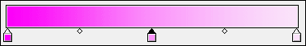
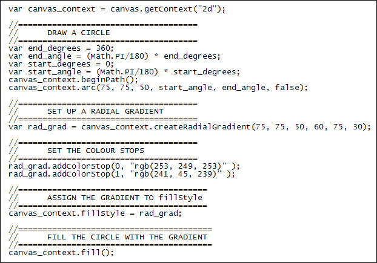
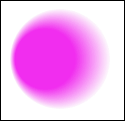

Linear and Radial Gradient Fill Styles
Ongoing HTML5 Canvas Tutorial: 1 2 3 4 5 6 7 8 9 10 11 12 13 14 15
Instead of filling your shapes with a solid colour you can fill them with a gradient. There are two types of gradient for the HTML5 canvas: linear and radial. To go from one colour to another in your gradient you set colour stops. If you're not sure what a colour stop is, take a look at this screenshot:

The colour stops are the three pink squares at the bottom. The one on the left is the darker colour, and the one on the right is the lighter colour. There's a colour midway between the two shades, halfway along. In your code, you type the different shades of colours you want to use. You don't have to use three stops, you can use more if you want (or fewer).
Let's have a look at some code for a liner gradient:
var canvas_context = canvas.getContext("2d");
var lin_grad = canvas_context.createLinearGradient( 0, 0, 0, 400 );
lin_grad.addColorStop(0, "#FC00F9" );
lin_grad.addColorStop(0.5, "#FB8AFA" );
lin_grad.addColorStop(1, "#FAE3FA" );
canvas_context.fillStyle = lin_grad;
canvas_context.fillRect(0, 0, 400, 400);
So the method to use for a liner gradient is createLinearGradient. In between the round brackets of the method you need four numbers separated by commas. The first two are the X an Y positions of where you want to start the gradient. The second two numbers are, again, X and Y positions; but the these last two numbers are end points for the gradient. In our code we have 0, 0 for the start, and 0, 400 for the end. This will get you a gradient from top to bottom.
To add a colour stop the method to use is addColourStop. It goes after your 2D context object. In between the round brackets of addColourStop you need a position for you colour stop, and the actual colour. The positions go from 0 to 1. A position of 0.5 is half way between the two. The colour can be a hexadecimal colour, a RGB one, or a named colour like black, white red, etc. We're using hexadecimal values.
Once you have set up your gradient, you assign it to fillStyle. So you're just setting a gradient instead of solid colour.
The effect of the above code is this:
Radial Gradients
If you want a radial gradient instead of a linear one, the method to use is this:
createRadialGradient( x1, y1, radius1, x2, y2, radius2 );
You're setting up two circles, here. The first three arguments are x1, y1, radius1. The X and Y are for the centre of your first circle, the outer one. The inner circle is defined by using the final three arguments x2, y2, radius2. Again, the X and Y are for the centre of the circle. Here's some code:

You've already seen how to draw a circle. The line that sets up the radial gradient is this:
var rad_grad = canvas_context.createRadialGradient( 75, 75, 50, 60, 75, 30 );
For the first three numbers, a circle with a radius of 50 is defined. The position is 75 pixels from the left of the canvas and 75 pixels down from the top. For the second circle, the left ( X ) position is 60. The top position is the same, 75. The radius is smaller at 30 pixels.
The code to set up the colour stop positions uses RGB values, but you can use hexadecimal or named colours, if you prefer. Finally, we assign the radial gradient to the fillStyle method, then use fill.
The result of the above code is a radial gradient that looks like this:

In the next part, we'll take a look at adding images as a fill style for a HTML5 canvas.